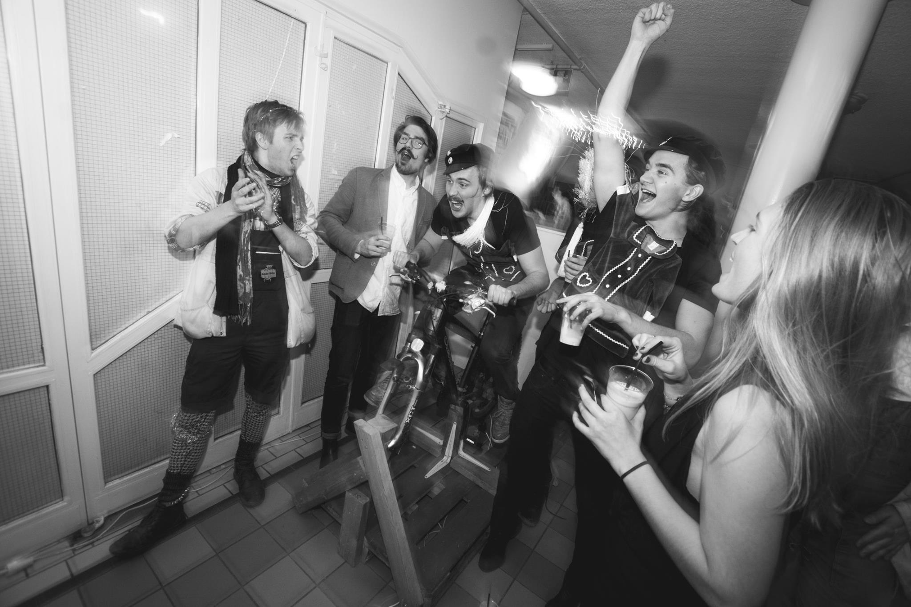
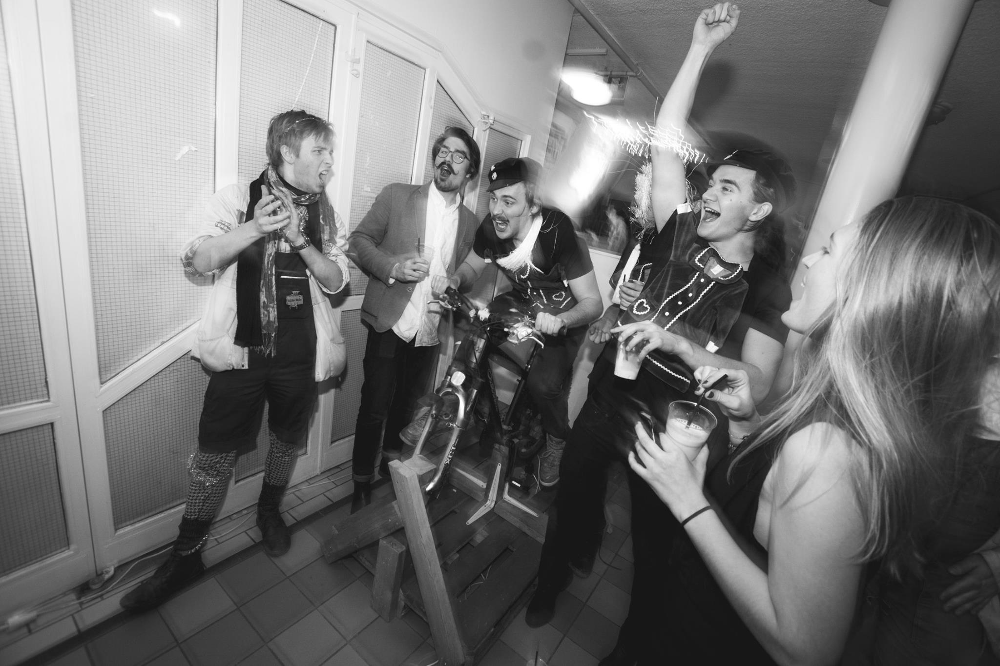
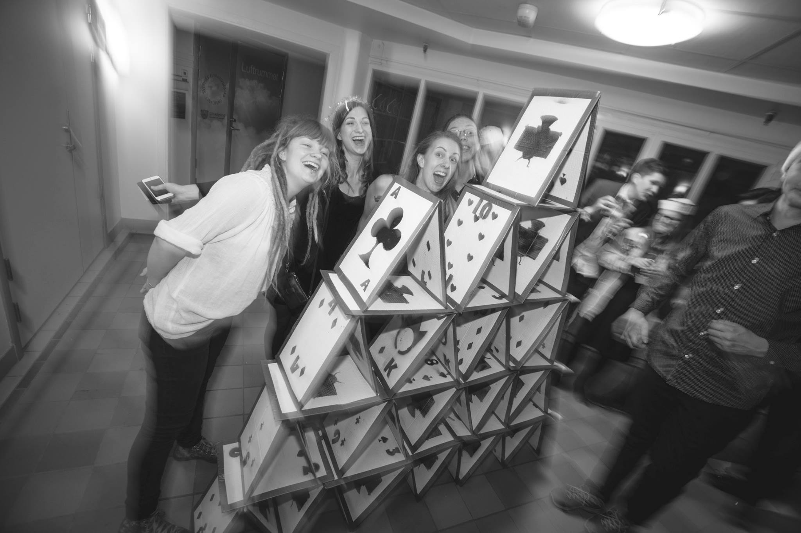
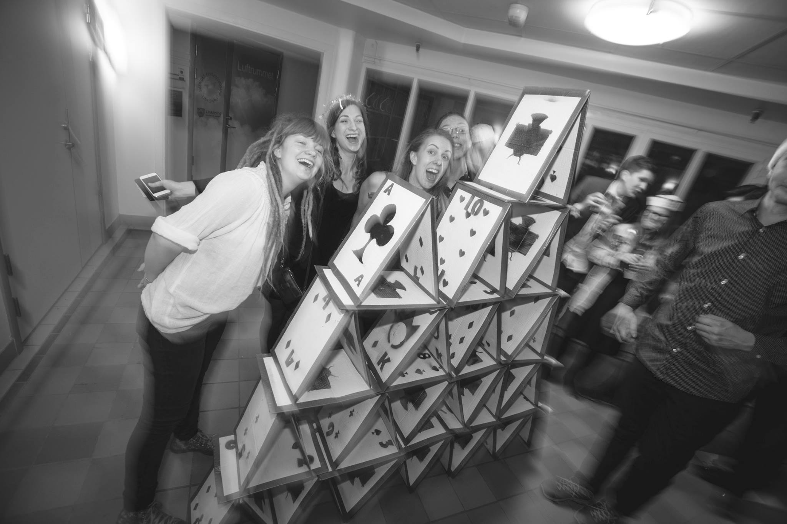

Tagga Luciafesten !
 Luciageneralerna har ordet
Luciageneralerna har ordet 
Varmt välkomna till Luciafesten, i vår mening årets mysigaste fest. Den nionde december svidas Kårallen om till julstass, komplett med dekor på alla våningsplan och en fyra meter hög julgran i Baljan. Runt om i huset kommer ett antal Kul Små Grejer™ finnas utplacerade. Exempelvis Tuba Hero, ett Guitar Hero spel du styr med en tuba, och vårt mystiska fotobås.
Kvällen inleds med en julsittning i Gasquen innan själva festen öppnar vid åtta. Kvällen kommer att vara fylld av musik och vi presenterar stolt inte mindre än fem live-akter: Lusen Big Band, LiU-bandet, LiTHe Blås, Helmut Jederknüller mit seinem Super Stereo à Gogo Orchester samt D-bandet. Som om inte det vore nog kan man dessutom som festbesökare själv bidra till musiken tillsammans med vårt Harakiri-band, karaoke ackompanjerat av vårt skickliga liveband.
Andra stämningshöjande inslag är temabarer, luciatåg, dans runt granen och julklappsbyte. För att hinna uppleva allt som händer rekommenderar vi stark att ni kommer tidigt till festen för att inte missa något. Så lämna ovven hemma, ta på dig din finaste julutstyrsel (kom i klänning/kavaj eller varför inte som snöflinga, julgranskula eller luciakrona) och kom till Kårallen den 9/12 för en fest du sent kommer att glömma.
Luciageneralerna
Gustav, Tova och Sofia
 Om festen
Om festenFin eller finurlig
Med klädkoden fin eller finurlig ber vi dig att lämna ovven hemma och istället ta fram din gamla julgransdräkt som ligger längst bak i garderoben. Men misströsta inte om den verkar vara försvunnen, för det fungerar lika bra med långklänning eller en av dina alla julkostymer. Det viktiga är att du känner dig fin… eller finurlig!
Paketbyte
Ta gärna med dig ett fyndigt paket till Kårallen. Värdet bör vara 20:-. Väl på plats lämnar du in ditt paket, men glöm inte att ta med ett nytt ut igen när du lämnar festen för denna gång.
KSG - Kul Små Grejer™
Under festens gång kommer du garanterat springa på en del KSG, Kul Små Grejer™, i Kårallen. Då gäller det att stanna upp, fokusera och vara beredd med både intelligenta strategier och ren råstyrka för här väntar en utmaning. Ta dina kompisar till hjälp och se vem som klarar sig bäst när ni tillsammans utforskar Kårallen.
Harakiri - Musikalist självmord
I Gasquen utlovas det karaoke till LiTHe Blås eget liveband, Harakiri! Med ett stort utbud av låtar så finns det något för alla att sjunga med i. Tveka inte att ta plats på scen, oavsett hur dina senaste sånginsatser i duschen har varit, att sjunga vackert är ändå inte själva tanken!
Julsittning
Innan Kårallens dörrar öppnas upp för Luciafest hålls en magisk julsittning. Här bjuds det på många av julens härligheter och underbar julstämning utlovas.
 Schema
Schema17:30
Sittningsgäster välkomnas med fördrink
20:00
Kårrallens dörrar öppnas upp för övriga gäster
21:00
Lusen Big Band entrar Baljan
21:30
Harakiri drar igång i Gasquen
22:15
LiU-bandet tar över scenen i Baljan
23:30
LiTHe Blås stormar Baljan
00:00
Dans runt gran och Luciatåg i Baljan
00:30
Helmut Jederknüller mit seinem Super Stereo à Gogo Orchester river igång i Gasquen
01:15
D-bandet rockar loss i Baljan
01:30
Harakiri drar åter igång i Gasquen
03:00
Luciafesten är över för i år och nedräkningen börjar till Luciafesten 2018
 Biljetter
BiljetterBiljettsläpp Måndag 4 December
Biljettsläppet för årets juligaste fest sker online, wow! Webshopen öppnas upp i samband med att LiTHe Blås river av en riktig dunderspelning i Colloseum. Spelningen kommer äga rum någon gång mellan 12 och 13. Kom dit och titta på så får du veta exakt när biljetterna släpps, annars gäller det att vara beredd här på hemsidan!
Priser
Festkvällen kommer äga rum lördagen den 9/12 på Kårallen och starta med en fantastisk julsittning med fördrink 17:30. För övriga öppnas Kårallen upp 20:00.
Julsittning + festbiljett: 345Kr (335Kr för kårmedlemmar)
Julsittning (alkoholfritt) + festbiljett: 305Kr (295Kr för kårmedlemmar)
Festbiljett: 125Kr (115Kr för kårmedlemmar)
Köp biljett! Temabarer
TemabarerAmigo
Utanför Amigo möts du av självaste Sailor Moon! Kom och kika efter Totoros vänner eller varför inte fånga en Pokémon eller två medans du njuter av en kall öl.
Nano
I Nano hittar du den rätta baren, precis på gränsen vid den 38e breddgraden. Har du tur kan du få se en enhörning eller få träffa hamburgarens uppfinnare.
Baljan
Alltså... Ingen vet mer om barer än vi. Många har ringt oss och sagt tack: "Blåset, ni har gjort oss en väldigt tjänst". Vi har den bästa baren. Bing! Bing! Du vet vad vi menar. Ses i Baljan! (vi har den bästa Baljan).
Gasquen
I Gasquen kan du köpa den sedvanliga jultallriken och njuta av fantastisk livekaraoke.
 Bilder fr
Bilder fr
 

 


 Vilka
Vilka Plingandet hörs på långt håll. Först bara svagt, sedan starkare och starkare. Plötsligt blandas ljudet med ett vrål och en hord av gul- och blåklädda personer i konstiga hattar stormar fram. Mycket ös och massa flås - vi är LiTHe Blås!
Det är inte omöjligt att du har sett oss uppträda någon gång. Vi har nämligen huserat på Linköpings universitet sedan 1973 och vårt studentikosa motto troget dyker vi upp när, var och hur som helst för att spela allt från doco till tokjazz. Vi består i dagsläget av ett femtiotal medlemmar från alla fyra fakulteter.
Det är också vi som ligger bakom det årliga Kårallenevenemanget Luciafesten! Under hösten har fela föreningen jobbat för att alla studenter ska få chansen att avsluta läsåret med en julig och kulig fest utöver det vanliga.
Hoppas vi ses där!
Wow, LiTHe Blås är ju coolaste gänget! Eller hur?! Kolla in vår sida om du vill veta mer, eller till och med boka oss till ditt evenemang.
Till LiTHe Blås hemsida